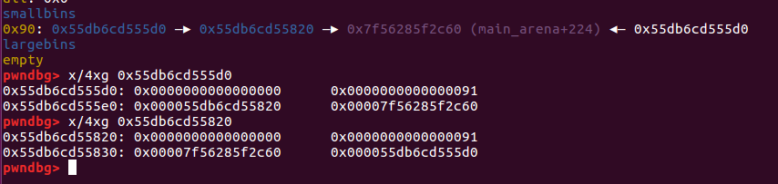
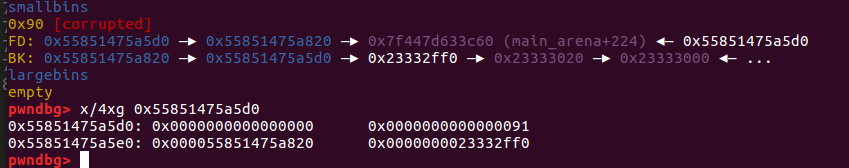
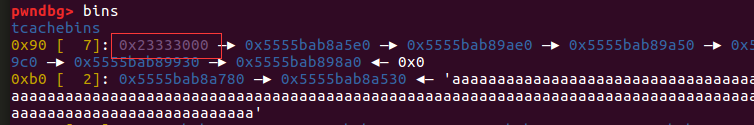
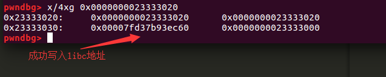

这道twochunk是花了点时间去研究libc-2.30源码解出，算是自己第一次没用现有办法研究出的pwn堆利用题目
漏洞分析
直接看源码吧
1 | /* |
这段代码在glibc2.30版本_int_malloc()函数中，从smallbins中申请出chunk时的一系列操作，我们分解来看：
首先是对该chunk进行完整性检测：
1 | if (__glibc_unlikely (bck->fd != victim)) |
然后进行unlink
1 | set_inuse_bit_at_offset (victim, nb); |
接下来，根据注释可以得知，如果还存在相同字节大小的不同chunk，会将其存放进tcache。
1 | /* While bin not empty and tcache not full, copy chunks over. */ |
整个过程是先将chunk从smallbins链中摘除再将其放入tcache，但对即将存放入tcache的chunk并没有进行完整性检测(bck->fd != victim)，这样就给了伪造chunk->bk的条件
利用以上可以做两件事
1.将fake chunk放入tcache中
2.可以在fake chunk->fd中写入一个地址，这个地址通常是main_arena偏移的地址
利用过程
构造在smallbins中有两个chunk:

修改后面进入的chunk->bk为fake chunk：

接下来我们申请出一个chunk，再次查看：


大功告成！
注意几点：
1.如果想把chunk放入tcache的同时，还要写入一个地址在fake chunk->fd中，不仅要提前设置好chunk->fd，还有chunk->bk，因为在unlink过程会访问bk（
bin->bk = bck;)，如果是非法地址会导致程序crash。
2.设置好tcache剩余chunk的数量
题解
对于这道题来讲，我们可以合理的利用这两个点来搞事情了，首先我们要先构造有两个chunk在smallbins里，而且大小要为0x90,办法有很多，我简单说一下我的思路
1.利用calloc不会从tcache中申请，这样我们可以先将tcache填满再calloc申请chunk然后free掉，不会浪费我们仅有的两个位置
2.释放进入tcache的chunk不会与top chunk或其他bins合并
3.合理利用一次malloc()的机会
完整exp:
1 | from pwn import * |